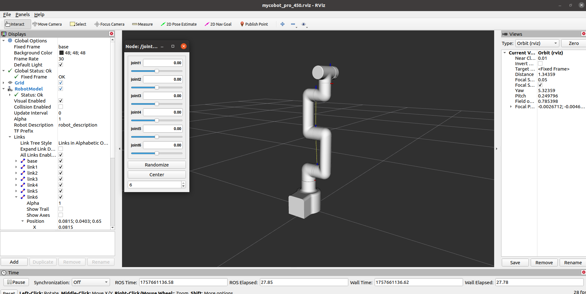
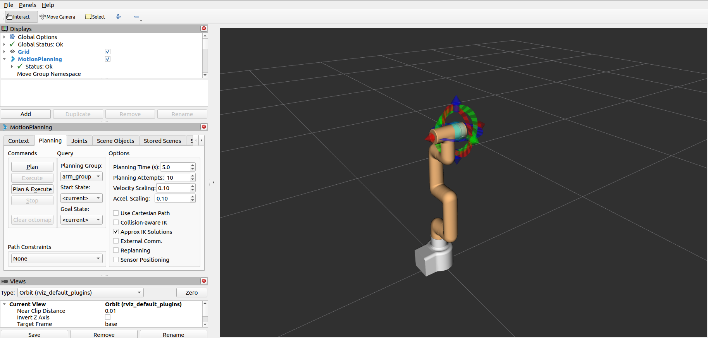

Robot Arm Control
Note: The pymycobot driver library version must be greater than 4.0.0
Pre-use Preparation
Before using the sample functions, please ensure that the following hardware and environment are complete:
Hardware
- MyCobot Pro 450 robot arm
- Network cable (for connecting the robot arm to the computer)
- Power adapter
- Emergency stop switch (for safe operation)
Software and Environment
- Python 3.6 or later installed
- The
pymycobotlibrary installed (using thepip install pymycobotterminal command) - Ensure that the MyCobot Pro 450 is properly powered on and in standby mode.
- Note: The Pro 450 server automatically starts upon powering on; no manual operation is required.
Network Configuration
- MyCobot Pro 450 default IP address:
192.168.0.232 - Default port number:
4500 - Note: PC The local network card IP address must be set to the same network segment as the robot (e.g., 192.168.0.xxx, where xxx is a number between 2 and 254 and must not conflict with the robot).
Example:
- Robot IP: 192.168.0.232
- PC IP: 192.168.0.100
- Subnet mask: 255.255.255.0
Verification: After completing the network configuration, execute the following command on the PC terminal. If data packets are successfully returned, the network connection is normal:
ping 192.168.0.232
- MyCobot Pro 450 default IP address:
1 Slider Control
Open a command line and run:
roslaunch mycobot_pro_450 slider_control.launch
# If the end effector is equipped with a myGripper F100 force-controlled gripper, run:
roslaunch mycobot_pro_450 slider_control_force_gripper.launch
Open rviz and a slider component, and you will see the following interface:

If the myGripper F100 force-controlled gripper is attached to the end, you will see the following interface:

You can then control the model in rviz and move it by dragging the slider. If you want the actual mold robot to move along with the model, open another command line and run the following command:
# The default IP address of the Pro450 is "192.168.0.232" and the port number is 4500.
rosrun mycobot_pro_450 slider_control.py
# If the end effector is equipped with a myGripper F100 force-controlled gripper, run the following command:
rosrun mycobot_pro_450 slider_control_force_gripper.py
Note: Since the robot arm will move to the model's current position when you enter the command, please ensure that the model in rviz does not clip before using the command.
Avoid dragging the slider quickly after connecting the robot arm to prevent damage.
2 Model Following
In addition to the above controls, we can also make the model follow the movement of the actual robot arm.
Open a command line and start the ROS node:
roscore

Then open a new command line and run:
rosrun mycobot_pro_450 follow_display.py
After running successfully, you need to simultaneously hold down the button at the end of the machine to drag the joint. The terminal output is as follows:
Trying to connect to real MyCobot Pro450...
IP: 192.168.0.232, port: 4500
Please press the button at the end of the machine to drag the joint.
请按下机器末端按钮进行关节拖拽运动
Publishing...
Finally, open another command line and run:
roslaunch mycobot_pro_450 follow_display.launch
This will open rviz and display the model following effect. At this point, dragging the real robot arm joints will cause the simulation model to follow the real robot arm's movements.

3 GUI Control
Building on the above, this package also provides a simple graphical user interface (GUI). Connect to mycobot.
Open the command line:
# The default IP address of the Pro450 is "192.168.0.232" and the port number is 4500.
roslaunch mycobot_pro_450 simple_gui.launch
# If the end device is equipped with a myGripper F100 force-controlled gripper, run:
roslaunch mycobot_pro_450 simple_gui_force_gripper.launch

If the myGripper F100 force-controlled gripper is installed at the end, the following interface will be displayed:
After successful execution, the terminal output is as follows:
SUMMARY
========
PARAMETERS
* /mycobot_services/ip: 192.168.0.232
* /mycobot_services/port: 4500
* /robot_description: <?xml version="1....
* /rosdistro: noetic
* /rosversion: 1.16.0
NODES
/
mycobot_services (mycobot_pro450_communication/mycobot_services.py)
real_listener (mycobot_pro_450/listen_real.py)
robot_state_publisher (robot_state_publisher/robot_state_publisher)
rviz (rviz/rviz)
simple_gui (mycobot_pro_450/simple_gui.py)
auto-starting new master
process[master]: started with pid [69286]
ROS_MASTER_URI=http://localhost:11311
setting /run_id to 5d888b36-8c89-11f0-b9c8-1f4f9291f209
process[rosout-1]: started with pid [69301]
started core service [/rosout]
process[robot_state_publisher-2]: started with pid [69304]
process[rviz-3]: started with pid [69308]
process[mycobot_services-4]: started with pid [69310]
process[real_listener-5]: started with pid [69311]
process[simple_gui-6]: started with pid [69317]
Current pymycobot library version: 4.0.1b0
pymycobot library version meets the requirements!
[INFO] [1757318207.730721]: Starting MyCobot service node...
[INFO] [1757318207.733988]: 192.168.0.232,4500
MyCobot Status
--------------------------------
Joint Limit:
joint 1: -165 ~ +165
joint 2: -120 ~ +120
joint 3: -158 ~ +158
joint 4: -165 ~ +165
joint 5: -165 ~ +165
joint 6: -175 ~ +175
[INFO] [1757318207.795377]: Services are ready
Then, enter the relevant angles and coordinates in the GUI and click the corresponding buttons to synchronize the motion of the real machine with the simulation model.
Note: Before using the gripper switch button, ensure that the adaptive gripper is connected to the end-of-arm robot.
4 Keyboard Control
Keyboard control functionality has been added to the mycobot_pro_450 package, allowing real-time synchronization within rviz. This functionality relies on the Python API, so ensure that the robot arm is connected.
Open a command line and run:
# The default IP address of the Pro450 is "192.168.0.232" and the port number is 4500.
roslaunch mycobot_pro_450 teleop_keyboard.launch
# If the end-user is equipped with a myGripper F100 force-controlled gripper, run:
roslaunch mycobot_pro_450 teleop_keyboard_force_gripper.launch
The following is the output:

If the myGripper F100 force-controlled gripper is installed on the end effector, the following interface will appear:
The following information about mycobot will be output in the command line:
SUMMARY
========
PARAMETERS
* /mycobot_services/ip: 192.168.0.232
* /mycobot_services/port: 4500
* /robot_description: <?xml version="1....
* /rosdistro: noetic
* /rosversion: 1.16.0
NODES
/
mycobot_services (mycobot_pro450_communication/mycobot_topics.py)
real_listener (mycobot_pro_450/listen_real_of_topic.py)
robot_state_publisher (robot_state_publisher/robot_state_publisher)
rviz (rviz/rviz)
auto-starting new master
process[master]: started with pid [76496]
ROS_MASTER_URI=http://localhost:11311
setting /run_id to cf3d03b0-8c89-11f0-b9c8-1f4f9291f209
process[rosout-1]: started with pid [76511]
started core service [/rosout]
process[robot_state_publisher-2]: started with pid [76514]
process[rviz-3]: started with pid [76518]
process[mycobot_services-4]: started with pid [76520]
process[real_listener-5]: started with pid [76522]
Current pymycobot library version: 4.0.1b0
pymycobot library version meets the requirements!
[INFO] [1757318398.354867]: 192.168.0.232,4500
MyCobot Status
--------------------------------
Joint Limit:
joint 1: -165 ~ +165
joint 2: -120 ~ +120
joint 3: -158 ~ +158
joint 4: -165 ~ +165
joint 5: -165 ~ +165
joint 6: -175 ~ +175
Then open another command line and run:
rosrun mycobot_pro_450 teleop_keyboard.py
# If the end-user is equipped with a myGripper F100 force-controlled gripper, run:
rosrun mycobot_pro_450 teleop_keyboard_force_gripper.py
You will see the following command line output:
Mycobot Pro450 Teleop Keyboard Controller (ROS1 - Topic Version)
---------------------------------------------------------
Movement (Cartesian):
w (x+)
a (y+) s (x-) d (y-)
z (z-) x (z+)
Rotation (Euler angles):
u (rx+) i (ry+) o (rz+)
j (rx-) k (ry-) l (rz-)
Movement Step:
+ : Increase movement step size
- : Decrease movement step size
Gripper:
g - open h - close
Other:
1 - Go to init pose
2 - Go to home pose
3 - Save current pose as home
q - Quit
currently: speed: 50 change percent: 5
In this terminal, you can control the robot's state and move it using command-line keys.
Note: After entering 2 to return the robot to the starting point, the following prompt will appear in the terminal before performing other coordinate control operations:
[WARN] [1758001794.385321]: Coordinate control disabled. Please press '2' first.
[INFO] [1758001804.552778]: Home pose reached. Coordinate control enabled.
[INFO] [1758001817.069637]: Home pose reached. Coordinate control enabled.
[WARN] [1758001836.301070]: Returned to zero. Press '2' to enable coordinate control.
[WARN] [1758001848.830702]: Coordinate control disabled. Please press '2' first.
[INFO] [1758001863.383565]: Home pose reached. Coordinate control enabled.
[WARN] [1758001933.596504]: Returned to zero. Press '2' to enable coordinate control.
[WARN] [1758001942.051899]: Coordinate control disabled. Please press '2' first.
This script supports the following parameters:
- _speed: Robot's movement speed
- _change_percent: Movement distance percentage
5 Moveit Usage
mycobot_ros integrates the MoveIt component.
Open a command line and run:
roslaunch mycobot_pro450_moveit demo.launch
The result is as follows:

The terminal will output the following information, indicating that moveit has been successfully started:
[ INFO] [1757321505.678763337]: Loading robot model 'firefighter'...
[ INFO] [1757321505.782983258]: Set joints of group 'arm_group' to pose 'init_pose'.
[ INFO] [1757321505.783324504]: Fake controller 'fake_arm_group_controller' with joints [ joint1 joint2 joint3 joint4 joint5 joint6 ]
[ INFO] [1757321505.783798265]: Returned 1 controllers in list
[ INFO] [1757321505.792047465]: Trajectory execution is managing controllers
[ INFO] [1757321505.792117958]: MoveGroup debug mode is ON
Loading 'move_group/ApplyPlanningSceneService'...
Loading 'move_group/ClearOctomapService'...
Loading 'move_group/MoveGroupCartesianPathService'...
Loading 'move_group/MoveGroupExecuteTrajectoryAction'...
Loading 'move_group/MoveGroupGetPlanningSceneService'...
Loading 'move_group/MoveGroupKinematicsService'...
Loading 'move_group/MoveGroupMoveAction'...
Loading 'move_group/MoveGroupPickPlaceAction'...
Loading 'move_group/MoveGroupPlanService'...
Loading 'move_group/MoveGroupQueryPlannersService'...
Loading 'move_group/MoveGroupStateValidationService'...
Loading 'pilz_industrial_motion_planner/MoveGroupSequenceAction'...
[ INFO] [1757321505.848190702]: initialize move group sequence action
[ INFO] [1757321505.853932419]: Reading limits from namespace /robot_description_planning
Loading 'pilz_industrial_motion_planner/MoveGroupSequenceService'...
[ INFO] [1757321505.867558584]: Reading limits from namespace /robot_description_planning
[ INFO] [1757321505.884930897]:
********************************************************
* MoveGroup using:
* - ApplyPlanningSceneService
* - ClearOctomapService
* - CartesianPathService
* - ExecuteTrajectoryAction
* - GetPlanningSceneService
* - KinematicsService
* - MoveAction
* - PickPlaceAction
* - MotionPlanService
* - QueryPlannersService
* - StateValidationService
* - SequenceAction
* - SequenceService
********************************************************
[ INFO] [1757321505.885485766]: MoveGroup context using planning plugin ompl_interface/OMPLPlanner
[ INFO] [1757321505.885536833]: MoveGroup context initialization complete
You can start planning now!
[ INFO] [1757321508.935642298]: Loading robot model 'firefighter'...
[ INFO] [1757321509.253483659]: Starting planning scene monitor
[ INFO] [1757321509.257223628]: Listening to '/move_group/monitored_planning_scene'
[ INFO] [1757321509.375270577]: Constructing new MoveGroup connection for group 'arm_group' in namespace ''
[ INFO] [1757321510.628737935]: Ready to take commands for planning group arm_group.
The basic path planning operation is as follows:
If you want the actual robot arm to execute the plan synchronously, you need to open another command line and run:
# The default IP address of the Pro450 is "192.168.0.232" and the port number is 4500.
rosrun mycobot_pro450_moveit sync_plan.py
Modifying Movement Speed
To prevent joint shaking during actual robot arm movement, reduce the joint movement speed.
- In the
sync_plan.pyfile, modify the speed parameter of the robot arm's Python API. Here, change it to 25。
...
def callback(data: JointState):
"""Callback function for ROS JointState subscription.
This function converts incoming joint positions (radians) to angles
in degrees and sends them to the Pro450 robotic arm.
Args:
data (JointState): Joint state message containing joint positions.
"""
data_list = []
for index, value in enumerate(data.position):
radians_to_angles = round(math.degrees(value), 2)
data_list.append(radians_to_angles)
rospy.loginfo(data_list)
mc.send_angles(data_list, 25)
...
In the Moveit RViz interface, modify the velocity and acceleration scaling. In this case, change it to 0.1 and save the current configuration.